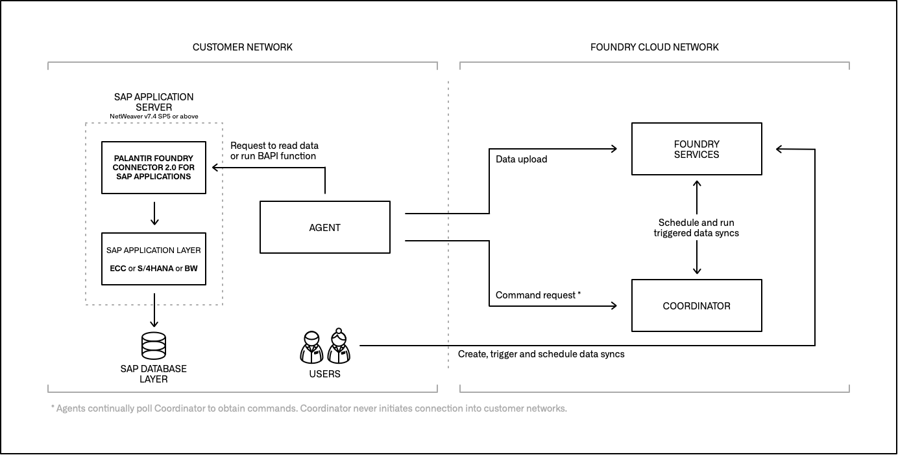
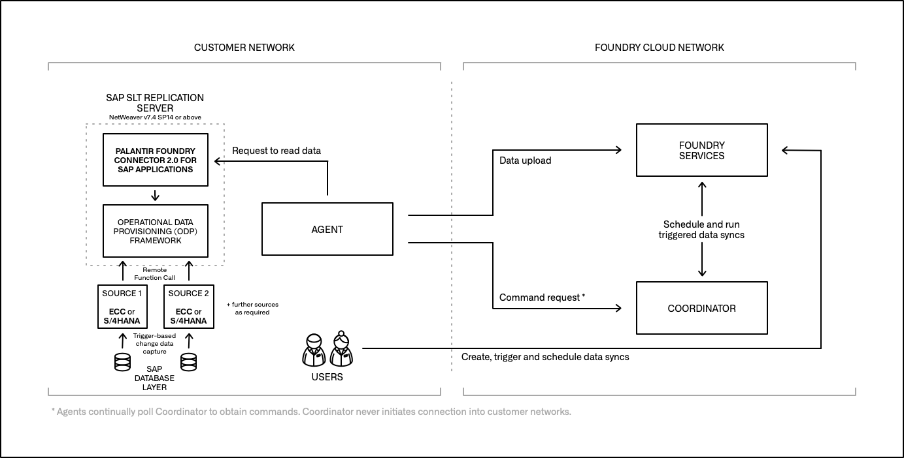
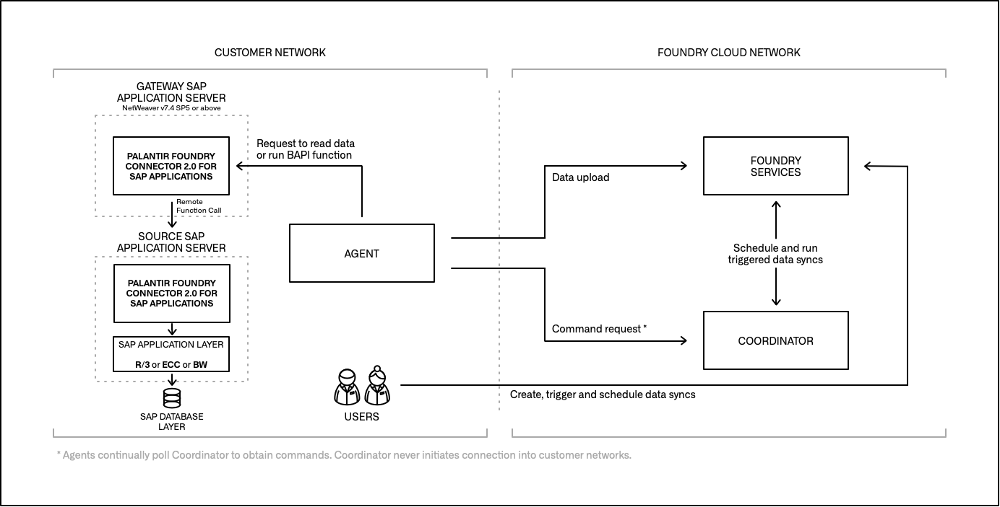

There are three main architectural patterns for connecting Foundry to an SAP system. All three follow the standard Data Connection architecture and make use of Data Connection agents.
In this scenario, the Palantir Foundry Connector 2.0 for SAP Applications ("Connector") is installed directly on the SAP ERP or Business Warehouse (BW) system containing the data to be read or hosting the functions / queries to be executed.

In this scenario, the Connector is installed on the SAP SLT Replication Server, and a Remote Function Call (RFC) connection is established between that server and the source ERP systems. Data is replicated from each source ERP table to a corresponding Operational Delta Queue (ODQ) in the SLT system based on database triggers.

This scenario is applicable when the source ERP system does not fulfill the minimum requirements for installing the Connector (SAP_BASIS, the technical component version applicable to both SAP NetWeaver and SAP S/4HANA systems, version 7.4 SP5 or above). Here, the main component of the Connector is installed on a "gateway" application server that meets the minimum requirements, and an RFC connection is established between that server and the source ERP system(s). A remote agent component of the Connector is installed on the source ERP system(s), which facilitates the reading of data or the execution of functions / queries.
